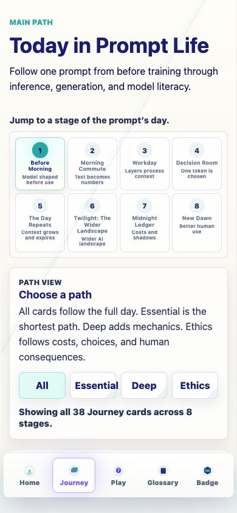
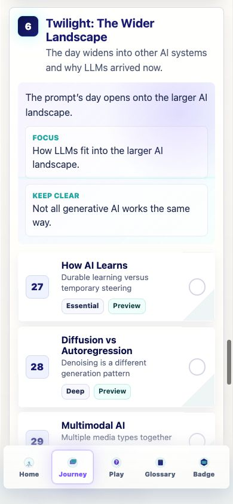
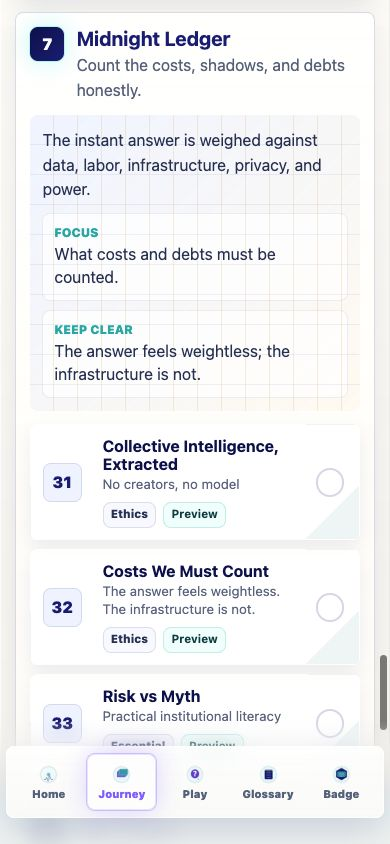
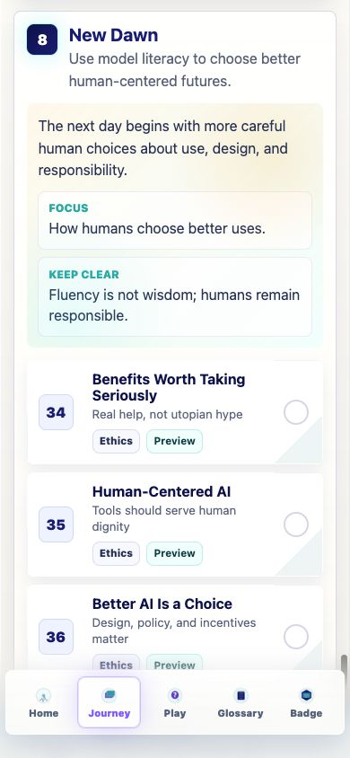
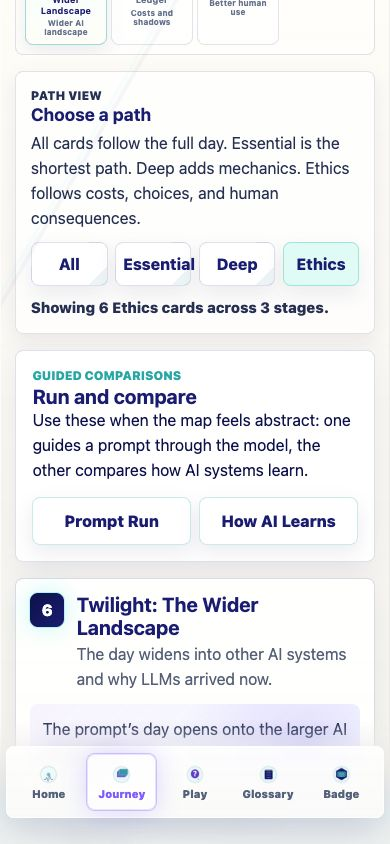
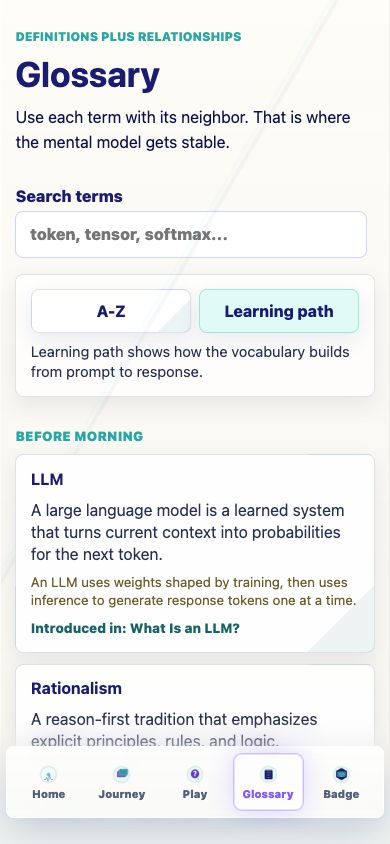
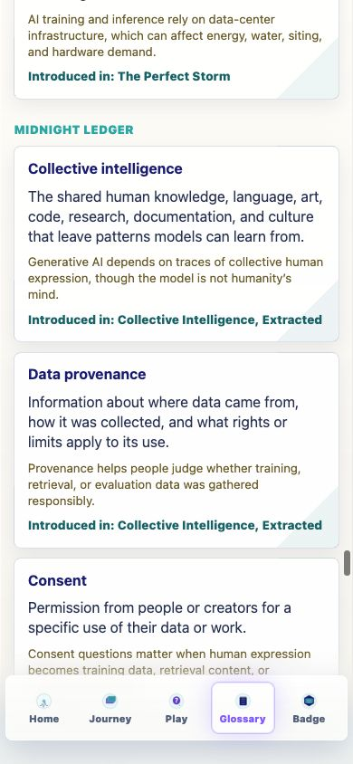

Prompt Life v0.15
Journey Narrative Architecture Report
Internal report generated 2026-06-05. This PDF wraps the response summary and screenshots for the eight-section Journey narrative pass.
What Changed
Eight-section JourneyReplaced the six-section map with a fuller day structure from Before Morning to New Dawn.
Late-day splitSplit the old broad Wider AI Literacy ending into Twilight, Midnight Ledger, and New Dawn.
Clickable stagesMade Journey stage items real buttons that scroll inside the app shell.
Glossary groupingUpdated Learning path glossary grouping to the new section names.
No new lessons were added. The existing 38 cards were reassigned and reordered so Journey, Learn mode, and Next Lesson all follow the same narrative arc.
Files Changed
src/data/content.tssrc/main.tsxsrc/styles/global.cssREADME.mddocs/REVIEW_NOTES.mddocs/curriculum/JOURNEY_SECTION_RESTRUCTURE_V0_15.mddocs/curriculum/V0_15_CHANGE_LOG.mddocs/curriculum/prompt-life-v0-15-journey-narrative-report.htmldocs/curriculum/prompt-life-v0-15-journey-narrative-report.pdfdocs/screenshots/v0-15-*.png
How To Run Locally
cd ~/Desktop/promptlife
npm install
npm run devOpen the local URL printed by Vite. For phone testing on the same Wi-Fi network, run npm run dev -- --host 0.0.0.0 and open the Network URL Vite prints.
For the deployed build, open https://kevinhegg.github.io/promptlife/?v=015 after the GitHub Pages run completes.
New Section Structure
| # | Section | Role |
|---|---|---|
| 1 | Before Morning | Model shaping before ordinary use. |
| 2 | Morning Commute | Text becomes tokens, IDs, vectors, and tensors. |
| 3 | Workday | Transformer layers process the current context. |
| 4 | Decision Room | Scores become probabilities and one next token is chosen. |
| 5 | The Day Repeats | Responses grow; context changes and expires. |
| 6 | Twilight: The Wider Landscape | Other AI systems and why LLMs arrived now. |
| 7 | Midnight Ledger | Costs, extraction, risk, and institutional shadows. |
| 8 | New Dawn | Benefits, human-centered use, responsible choices, prompting, and synthesis. |
Card Reassignment Summary
- Twilight: How AI Learns, Diffusion vs Autoregression, Multimodal AI, The Perfect Storm.
- Midnight Ledger: Collective Intelligence, Extracted; Costs We Must Count; Risk vs Myth.
- New Dawn: Benefits Worth Taking Seriously; Human-Centered AI; Better AI Is a Choice; Effective Prompting from Model Literacy; Model Literate Synthesis.
Behavior
- Stage links scroll to visible Journey sections and respect reduced-motion settings.
- Journey filters keep All, Essential, Deep, and Ethics. Empty sections are hidden under filters.
- Glossary Learning path now groups terms by the eight-section architecture.
- Preview/Review/Learn behavior remains unchanged. Preview from New Dawn returned near the New Dawn section during QA.
Verification
npm install: passed.npm run typecheck: passed.npm run build: passed with the existing Vite large-chunk warning.npm run build:pages: passed with the existing Vite large-chunk warning.- Browser QA at 320, 390, and 430px found no horizontal overflow in Journey All, Essential, Deep, or Ethics filters.
- Browser QA verified section jumps, Glossary Learning path grouping, Ethics filter stage hiding, and Preview/Return behavior.
Known Issues
- The existing Vite single-chunk warning remains.
- Reset-progress QA was not clicked because it clears local device progress and requires explicit confirmation.
- Prompt Injection / Tool Risk remains inside Risk vs Myth rather than a dedicated card.
Next Three Recommended Steps
- Run the source-review pass for Midnight Ledger and New Dawn before v1 publication language.
- Consider a dedicated Prompt Injection / Tool Risk card if security literacy needs more space.
- Add separate Badge progress for Essential, Deep, and Ethics once the path model stabilizes.
Screenshots






